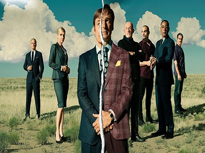

Nombre Completo: Guillermo de Jesús Jimenez Torres
Semestre: Cuarto (4to) Semestre
Hobbies:
Ir al Gym
Leer
Jugar Videojuegos
Descripción: Un profesor de química con cáncer terminal se asocia con un exalumno suyo para fabricar y vender metanfetamina a fin de que su familia no pase apuros económicos
Actores Relevantes: Bryan Cranston, Aaron Paul, Anna Gunn
Descripción: seis años antes de los eventos de Breaking Bad, la serie sigue la historia de Jimmy McGill (interpretado por Bob Odenkirk), un exestafador de poca monta convertido en abogado, cuyo declive moral lo lleva a transformarse en el extrovertido Saul Goodman.
Actores Relevantes: Bob Odenkirk, Rhea Seehorn, Michael Mando
